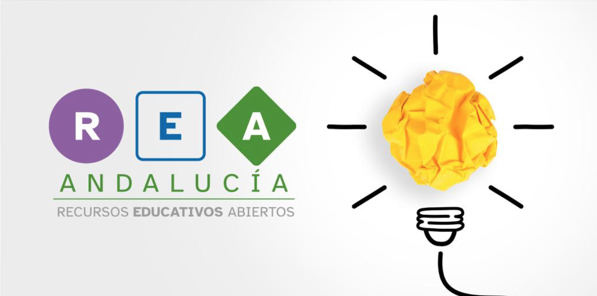
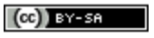

Misión de la Iglesia.
Créditos.
Descargar el fichero fuente.
Información general sobre este recurso educativo.
| Título. | Misión de la Iglesia. |
| Descripción. | En este proyecto el alumnado tendrá que realizar una investigación sobre la misión de Jesucristo, la misión de la Iglesia y la misión de los apóstoles, además de tomar conocimiento de la vida y obra de algunos santos y santas de la Iglesia Católica, así como la labor de la Iglesia Católica en 2026. El alumnado tendrá que realizar un presentación interactiva y presentarla al resto de equipos. |
| Autoría. | Antonio Jesús Gómez Ruiz. |
| Licencia. |
 Creative Commons BY-SA 4.0 |
Este contenido fue creado con eXeLearning, el editor libre y de fuente abierta diseñado para crear recursos educativos.
| Descargar el fichero .elp |
Obra publicada con Licencia Creative Commons Reconocimiento Compartir igual 4.0